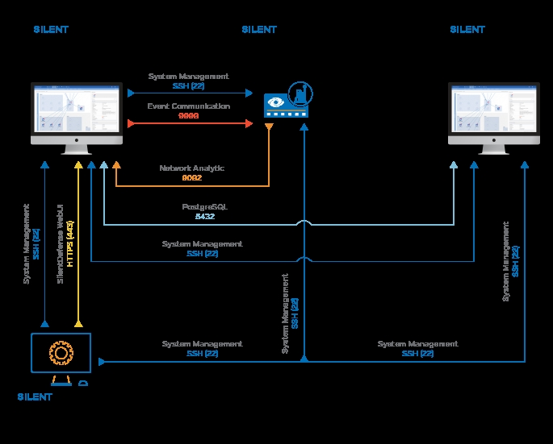

TCP Wrappers is an open source host-based Access Control List (ACL) system. It’s useful to restrict access to TCP network services based on the host name, IP address, network address of the requester. In TCP Wrappers, the restricted and allowed services can be defined easily in a plain text file. TCP Wrappers is installed by default on the eyeInspect server.
TCP Wrappers implements access control by means of two configuration files:
When an SSH network request reaches the eyeInspect Command Center or Passive Sensor server, the hosts.allow will be evaluated first and will therefore determine if the source host is allowed to access the SSH service.
The following constraints and restrictions apply to the hosts.allow file:
This example describes how users can restrict access to the eyeInspect SSH service.
The figure below illustrates a simplified ICS/SCADA network, where an eyeInspect Primary Command Center and eyeInspect Secondary Command Center and a Passive Sensor are deployed.
To restrict access to the SSH service, the hosts.allow file has to be modified on each eyeInspect server. Assuming the management IP addresses of the eyeInspect servers depicted above, the content of the hosts.allow files shall be the following:
sshd: 192.168.57.5 192.168.57.6 sshd: ALL: DENY
sshd: 192.168.57.3 192.168.57.5 sshd: ALL: DENY
sshd: 192.168.57.3 192.168.57.5 192.168.57.6 sshd: ALL: DENY
TCP Wrappers is a valuable addition to enhance the security of eyeInspect servers. More restrictive security configurations can also be set using iptables
